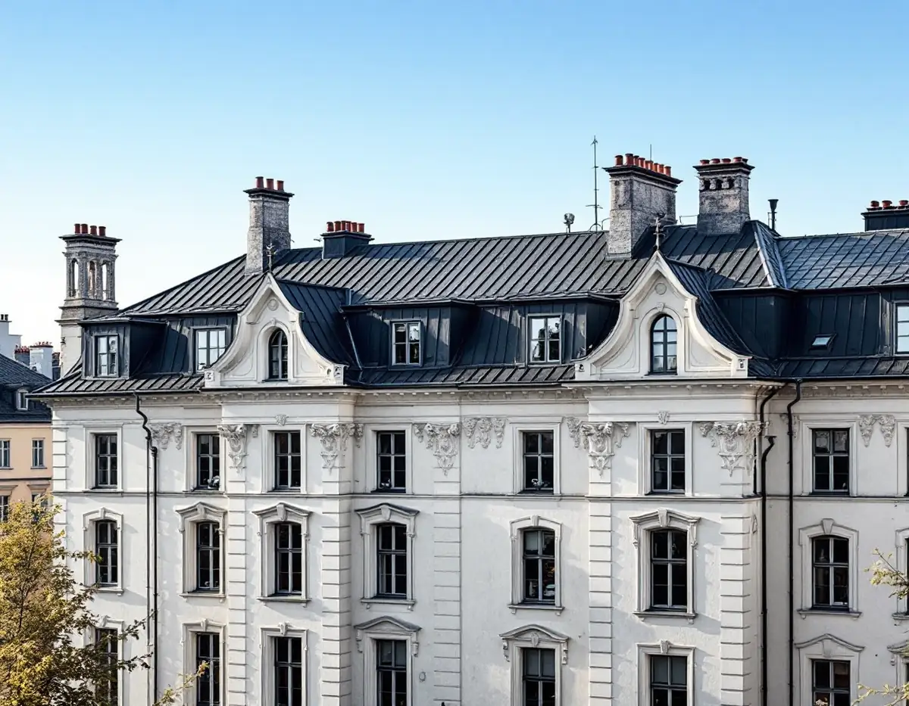
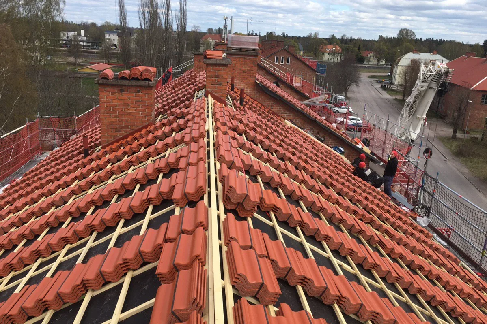
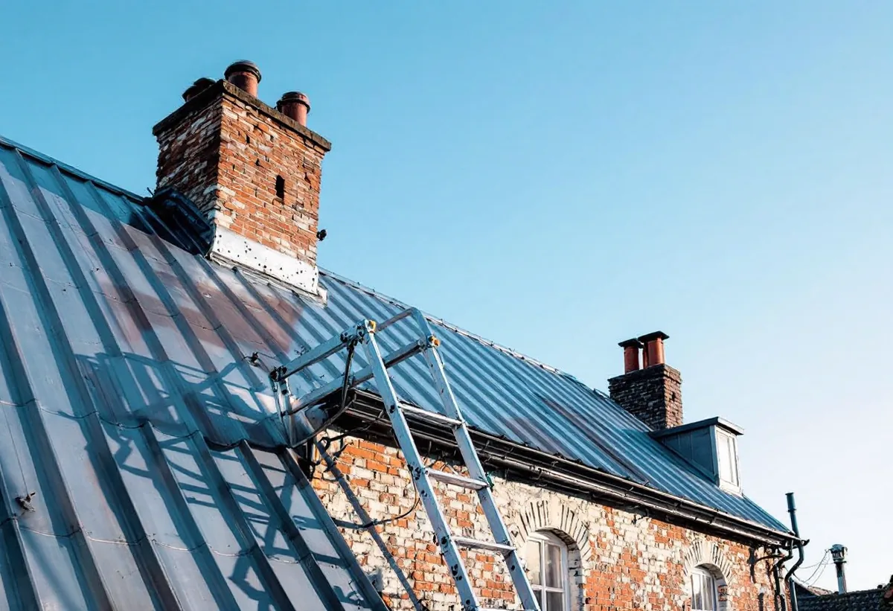

Platsbesök
Gratis besök på taket med föreningen eller förvaltaren.

När ett tak på Östermalm byts är det också läge att se över hur man tar sig upp och rör sig på det, och hur snö och is hålls kvar över entréerna.
Skicka gärna en bild på taket.
Något blev fel. Kontrollera uppgifterna eller ring 08 12 410 276.
Pris: från 1 400 kr/m² inkl. material, före ROT-avdrag
Vi tittar på jobbet på plats innan du får offert.
Du ser vad som ingår och vad det kostar.
Vi drar av ROT direkt och sköter ansökan.
Geal Entreprenad AB, Bromma. Org.nr 559303-7566.

Geal Entreprenad AB byter tak på flerbostadshus och tar med taksäkerheten i underlaget till föreningen.
Stadens redovisning av riksintressena beskriver stenstadens stora sammanhållna bebyggelsemassa på Norrmalm och Östermalm som grundanslaget i dagens stadssiluett. Husen uppfördes till största delen under 1800-talets senare del. Taken beskrivs som sluttande och oftast plåttäckta.
Stadens områdesfakta för 2025 räknar i Hedvig Eleonora drygt 5 100 bostadsrätter i flerbostadshus och omkring 2 100 lägenheter hos privata hyresvärdar. Ett takbyte på Östermalm beställs alltså i regel av en förening eller en hyresvärd.

Boverket skriver att reglerna om taksäkerhet ska förebygga att människor faller ner från taket under byggnadens användning och drift. Det ska finnas tillträdesanordningar till taket, fasta anordningar för att förflytta sig på taket och skyddsanordningar mot fall, om det finns ett fast arbetsställe på taket eller taket annars behöver beträdas för byggnadens drift.
På ett stenhus med skorstenar och ventilationshuvar behöver sotare och fastighetsskötare upp. Kraven gäller fullt ut för nya byggnader, och vid en ändring får de enligt Boverket anpassas om det finns skäl. Vi går igenom takstegar, takbryggor och förankringar med föreningen innan det nya taket läggs, eftersom de fästs i samma underlag.
Boverket skriver att det vid entréer ska finnas skyddsanordningar på taket mot fallande is och snö när byggnaden är utformad så att det finns särskilda risker. Fasadens höjd, takets lutning och friktionen i takmaterialet kan vara skäl. För att hantera snölasten kan snörasskyddet behöva vara längre än bara sträckan över entrén.
Ett hus i gatuliv med entré mot trottoaren är just den situation reglerna tar sikte på. När plåten byts monterar vi snörasskydd i den nya täckningen i stället för att skruva fast dem i efterhand.
Stockholms stad räknar byte av material eller kulör på tak som en fasadändring. För ett flerbostadshus krävs bygglov när ändringen görs på ett tak som vetter mot allmän plats. Ligger huset inom ett riksintresse eller i ett område som pekats ut som särskilt värdefullt, eller är det blå- eller grönklassat, krävs bygglov även för det som annars är lovfritt.
Om huset berörs visar Stadsmuseets klassificeringskarta, och staden hänvisar till Stadsmuseet för bedömning när det är oklart. Ska taket läggas om i samma material och utförande handlar det om underhåll, men varsamhetskraven gäller ändå.
Boverket skriver att regnvatten kan läcka in genom otätheter vid genomföringar, skarvar, ränndalar och infästningar, och att läckage ofta är svårt att lokalisera i efterhand. Bland exemplen nämns otäta infästningar för taksäkerhetsutrustning och räcken, otäta luckor och huvar och genomföringar vid till exempel skorstenar.
När takbryggor, stegar och snörasskydd monteras i samband med takbytet kan infästningarna tätas i samma moment som plåten läggs. Vi går igenom varje genomföring innan taket stängs.
Gratis besök på taket med föreningen eller förvaltaren.
Stegar, bryggor och förankringar ses över.
Klassning, material och eventuellt bygglov.
Ställning, väderskydd och tillstånd för gatan.
Rivning, underlag, ny plåt och snörasskydd.
Kontroller och dokumentation till föreningen.
Skatteverket ger rotavdrag i en bostadsrätt bara för arbete inne i bostaden som du ansvarar för enligt stadgarna. Arbete på gemensamma delar som tak och fasader ger inget rotavdrag, varken för föreningen eller för de boende.
Ett takbyte på ett flerbostadshus betalas därför av föreningen eller hyresvärden utan avdrag, och kostnadsförslaget ställs till den som äger huset.
Takets yta och höjd, antalet skorstenar och kupor, underlagets skick, taksäkerhet och snörasskydd, ställningen mot gatan och om bygglov behövs. En överblick finns i vad kostar ett takbyte. Efter ett gratis platsbesök får föreningen ett skriftligt kostnadsförslag.
Byte av tegel-, betong- och plåttak.
Takbyte →Takbyte, takbesiktning och plåtarbeten.
Takläggare på Östermalm →Stenstad, Lärkstaden, Diplomatstaden och Gärdet.
Takrenovering på Östermalm →Kulturvärden, förvanskningsförbud och klassning.
Badrumsrenovering på Östermalm →Slå ihop två lägenheter.
Byggföretag på Östermalm →Husets ursprungliga kulör.
Fasadmålning på Östermalm →Gatufasad, gårdsfasad och lovfrågan.
Fasadrenovering på Östermalm →Stenstaden, Lärkstaden och villorna.
Fönsterbyte på Östermalm →Fönster och glas i Gärdets 1930-talshus.
Fönsterrenovering på Östermalm →Mönsterparkett, lack och olja.
Golvläggare på Östermalm →Slipa om eller underhålla lackade golv.
Golvslipning på Östermalm →Stora lägenheter och kulturvärden.
Köksrenovering på Östermalm →Limfärg i taken, dekor och lov.
Målare på Östermalm →Taklandskapet och balkongerna.
Plåtslagare på Östermalm →Lagning av dörrar, paneler och fasta snickerier.
Snickare på Östermalm →Klassade våningar och bostadsrätt.
Tapetsering på Östermalm →Renovera hela lägenheten.
Totalrenovering på Östermalm →Eller ring 08 12 410 276, mån–fre 08–17.
Skicka gärna en bild på taket.
Något blev fel. Kontrollera uppgifterna eller ring 08 12 410 276.